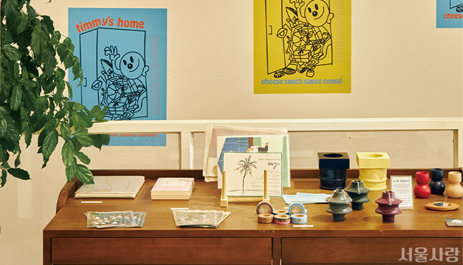
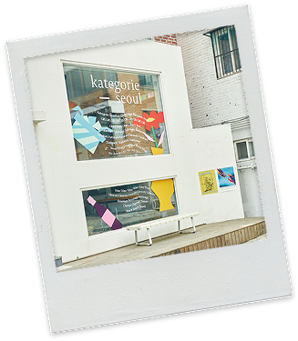
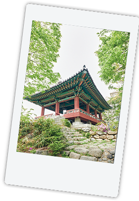
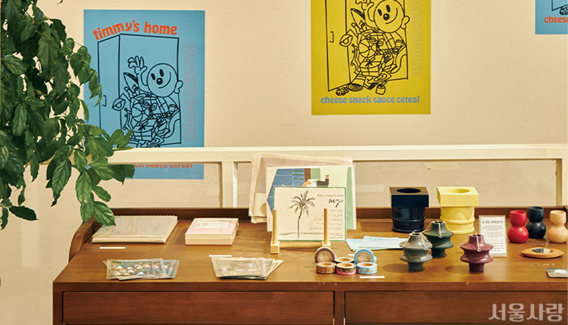
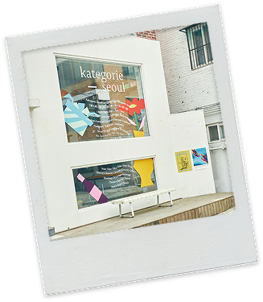
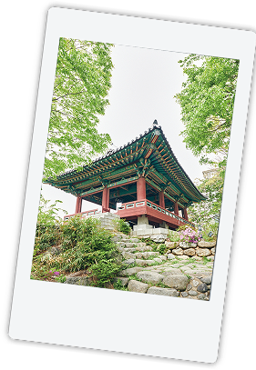
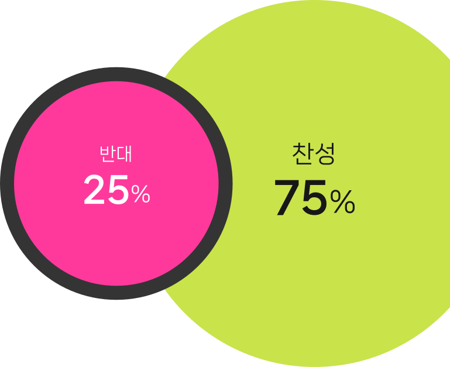
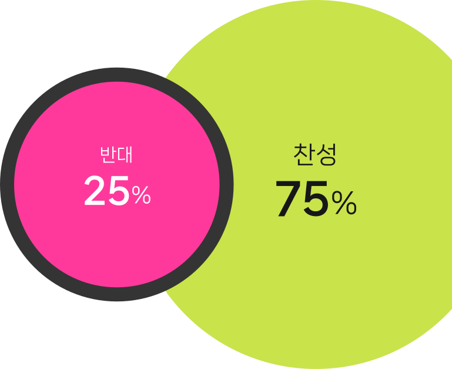

망원동이 확 달라진다고?

사진 출처: 브라보마이라이프 (이지혜 기자 jyelee@)

망원동 재개발은 '신속통합기획(신통기획)' 방식으로 추진 중인
대규모 주택정비 사업이에요. 2023년 11월 후보지로 선정됐으나,
주민 반발과 상권 보존 논란으로 현재 재검토 단계에 머물고 있죠.
서울시가 2025년 8월, 망원동 지역 재개발 추진에 대한
재검토 결정을 내렸어요. 주민 찬성률은 높았지만,
반대 의견 역시 첨예하기 때문입니다.
노후된 주거환경의 개선 필요성과
망리단길 상권 보호가 맞물려,
상인과 주민 간 찬반 의견이 팽팽하게
맞서고 있는 상황이에요.
주민들은 주택 노후화가 너무나 심각해
더 이상 살아가길 힘들 정도라고 토로했습니다.
낡은 집과 불편한 주거환경 때문에,
재개발이 꼭 필요하다는 목소리가 큰 것이죠.
 





재개발 저지 공동대책위원회는 주택가 골목에 개성 있는 상점들이 있
는 '망리단길'(망원동과 경리단길의 합성어) 골목 문화가 사라지고 망
원시장의 상권이 무너질 것을 우려하고 있어요.
재개발은 도시정비사업 중의 하나예요.
정비사업이란, 시설이 열악하고 노후ㆍ불량건축물이 밀집한 지역에서 주거환경을 개선(주택정비형
재개발)하거나 상업지역ㆍ공업지역 등에서 도시기능의 회복 및 상권활성화(도시정비형 재개발) 등
을 위하여 도시환경을 개선하기 위하여 시행하는 사업입니다.
신속한 사업추진을 지원하는
공공지원계획이에요.
정비계획 수립단계에서 서울시가 공공성과 사업성의 균형을 이룬 가이드라인을 제시하고, 공공과 민간이 손을 잡아 유연한 도시계획과 규제로 절차를 빠르게 진행하겠다는 의지로 기획됐어요.
5years
2years
신규 재개발지역의
정비구역 지정까지
평균 소요 5년에서
2년으로 단축
그래서 망원동 주민은 75퍼센트라는 재개발 찬성률을
보이며, 굉장히 높은 호응으로 반기고 있습니다.
제도상 30퍼센트 이상만 희망해도 구역 지정이 가능하거든요.
 

모두가 새 건물을 원하는 건 아닙니다.
서울연구원 관련 통계를 보면
재개발, 재건축 정비사업을 추진했을 때
원주민의 재정착률은 평균 27.7% 뿐이래요.
재개발하면 원주민 10명 중 7명은 떠난다는 겁니다.
추가 분담금 등 여유 자금이 있어야 하고
분양권을 팔아도 보통 이사를 가게 되거든요.
재개발 저지 공동위는 신속기획이 지역에 거주하지 않는 투자자 중심으로 추진된다고 주장해요.
대지 지분을 나눠 가진 빌라 소유주가 많고 단독주택 소유주나 실거주자 의견은 사업에 적게 반영된다는 비판도 있습니다.
지방자치단체가 개입한 정비사업 때문에 원주민이 터전을 떠난다는 우려는
신속기획 추진 지역 곳곳에서 고개를 들고 있어요.
이른바 공공 젠트리피케이션(둥지 내몰림) 논란입니다.
젠트리피케이션은 구성원의 비자발적 이주를 포함하고 있습니다.
외지인이 늘어나면서 임대료나 집값이 크게 상승해 원래부터 동네에 거주하던 사람들이 점
차 지역을 떠나게 되고, 골목만의 지역 문화를 유지하던 상점들이 문을 닫으면서 고유한 문
화도 점점 사라지게 되는 현상을 통틀어 말해요.
이런 현상이 심화되자 망원동은 유명세를 얻은 이름을 부르지 말자는 운동
(예: '망리단길 싫어요: 망리단길 부르지 않기' 서명 운동)을 벌이기도 했었어요.
내가 자라고 살아 온 동네가 허물어진다면
어떤 마음이 들까요?
주거 환경이 더 나은 모습으로 변화한다면 좋은
일이겠지만, 모두가 만족할 만한 법은 없을까요?

#오늘망원동